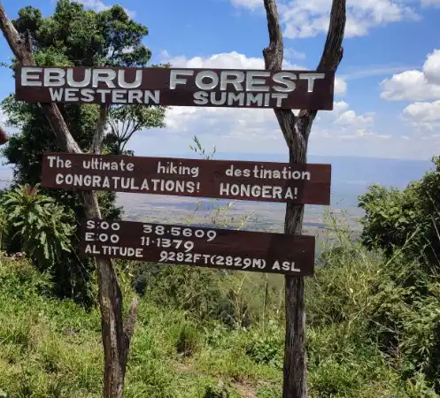

The Best Time to Hike Different Mountains and Hills in Kenya: Complete Hiking Seasons, Weather & Monthly Guide
At a Glance: Best Months for Hiking in Kenya
| Period | Hiking Conditions | Good For |
|---|---|---|
| January–March | Generally favorable in many areas | Day hikes, mountains, ridges and scenic trails |
| March–May | Often wetter and muddy | Experienced hikers prepared for wet conditions |
| June–September | Generally cool and relatively dry in many areas | Mountain hikes, ridge walks and weekend adventures |
| October–December | Variable with possible rainfall | Flexible hikers prepared for changing weather |
Kenya is one of East Africa's most rewarding destinations for mountain hiking, offering everything from high-altitude alpine terrain and volcanic craters to forested ridges, escarpments and scenic hills close to Nairobi. But when is the best time to hike in Kenya?
The answer depends on the mountain, altitude, location and type of hiking experience you want. Kenya has distinct wet and relatively dry periods, but weather can vary considerably between Nairobi, the Great Rift Valley, Central Kenya and high-altitude mountain environments.
In this guide, Kijabe Adventures explains the best time to hike Kenya's mountains, including Mount Kenya, Mount Longonot, Mount Kipipiri, the Aberdare Ranges, Ngong Hills, Mount Ol Doinyo Eburru and Menengai Crater. We also cover Kenya's hiking seasons, a month-by-month hiking calendar, rainy-season hiking, safety considerations and what to pack.
Understanding Kenya's Hiking Seasons
Kenya's climate is influenced by altitude, geography and seasonal rainfall. This means there is no single hiking season that applies equally to every mountain in the country. A route that is dry and comfortable in one region may be wet, cold or misty at a higher elevation.
For many popular hiking destinations, hikers often prefer the relatively drier periods of January to March and June to September. These periods can provide better trail conditions and improved visibility, although weather remains unpredictable and local conditions should always be checked before departure.
General Kenya Hiking Seasons
- January–March: Generally favorable for many hiking destinations, with warm conditions in lower elevations and potentially good visibility.
- March–May: The long-rain period in many parts of Kenya. Trails can become muddy and slippery, particularly in forests and highland areas.
- June–September: One of the most popular periods for hiking, with generally cooler and drier conditions in many areas.
- October–December: The short-rain period can bring changing conditions. Hiking remains possible, but hikers should be prepared for rain and rapidly changing trail conditions.
Kenya Hiking Calendar: Month-by-Month Guide
If you are wondering which month is best for hiking in Kenya, the following guide provides a general starting point. Remember that individual mountains have different microclimates.
January
January is often a good month for hiking in many parts of Kenya. Lower elevation routes can be warm, while higher mountain areas may remain cold. It is a popular period for day hikes, ridge walks and weekend adventures.
February
February can provide favorable hiking conditions in many regions. Visibility can be good on clear days, making this an attractive month for scenic viewpoints and mountain photography.
March
March marks a transition toward wetter conditions in many parts of Kenya. Hikers should be prepared for rain, muddy trails and slippery rocks, particularly on forest and highland routes.
April
April is commonly associated with significant rainfall in many parts of Kenya. Hiking remains possible, but wet-weather equipment and appropriate footwear become particularly important.
May
May can continue to bring wet conditions. Forest trails may be especially muddy, while clouds and mist can reduce visibility on higher ridges.
June
June is an attractive month for many hikers as conditions often become cooler and drier. It is a good time to explore destinations around Nairobi, the Rift Valley and Central Kenya.
July
July is generally cool, especially in the highlands. Hikers should carry warm layers because temperatures can fall significantly early in the morning and at higher elevations.
August
August is a popular hiking month, particularly for mountain and highland adventures. Clearer conditions can provide excellent views when weather cooperates.
September
September can offer excellent hiking opportunities before wetter conditions become more common later in the year. It is particularly attractive for hikers looking for cooler temperatures.
October
October can bring changing weather. Morning conditions may be excellent, while afternoon rain can develop quickly in some areas. Carrying a lightweight rain jacket is recommended.
November
November can be wetter in many parts of Kenya. Forest hikes may become slippery, so hikers should allow additional time and use shoes with good traction.
December
December offers a mixture of conditions. Some days can be excellent for hiking, while rainfall can occur unexpectedly. Flexible planning and checking the forecast before departure are important.
Best Time to Hike Mount Kenya

Mount Kenya is the highest mountain in Kenya and one of Africa's most spectacular high-altitude hiking destinations. Its terrain changes dramatically with elevation, from forest to moorland and alpine landscapes.
For trekking routes on Mount Kenya, the generally preferred periods are January–March and August–September. These periods are often favored because they can offer relatively drier conditions and better visibility.
Why Choose the Drier Periods?
- Better trail conditions on many sections
- Potentially improved mountain visibility
- More comfortable conditions for multi-day trekking
- Reduced likelihood of persistent rainfall compared with wetter periods
Conditions at high altitude can change rapidly regardless of season. Proper acclimatization, suitable clothing and experienced mountain guidance are important for serious Mount Kenya trekking.
Best Time to Hike Mount Longonot

Mount Longonot is one of Kenya's most popular volcanic hiking destinations and is particularly convenient for hikers traveling from Nairobi. The route combines a steep ascent with dramatic views of the Great Rift Valley and the volcanic crater.
The most favorable periods are generally June–September and January–March. During these periods, hikers may experience cooler or drier conditions that make the demanding climb more comfortable.
What Makes Longonot Challenging?
The combination of steep terrain, sun exposure and elevation gain means that even a relatively short day hike can be physically demanding. Start early, carry enough drinking water and protect yourself from the sun.
During wet weather, sections of the trail can become slippery. Always check conditions before starting the hike.
Best Time to Hike Mount Kipipiri

Mount Kipipiri rises to approximately 3,349 metres above sea level within the Aberdare ecosystem. Located in the Kipipiri Forest Reserve, the mountain is known for its scenic trails, lush forests, and panoramic views, making it a popular choice for day hikes and adventure treks. Its forested trails, mountain ridges and highland scenery make it an excellent destination for hikers looking for a less crowded Central Kenya adventure.
Kijabe Adventures offers guided Mount Kipipiri hiking experiences for visitors who want to explore the mountain with local trail knowledge and organized group support.
Many hikers find Mount Kipipiri to be a delightful destination within the Aberdare ecosystem, known for its rolling ridges and quiet forest trails. Hiking the mountain provides a unique opportunity to immerse oneself in the rich biodiversity of the region. Kijabe Adventures offers guided hikes to Mount Kipipiri, ensuring a safe and informative experience for all visitors having hosted hundreds of hikers visiting mt kipipiri.
The trail offers a moderate challenge with rewarding natural beauty, including misty peaks, dense montane forests, and opportunities to spot wildlife such as elephants, monkeys, and various bird species. Therefore, an guided hiking adventure to mount kipipiri is ideal for nature lovers and adventure seekers looking to experience Kenya’s high-altitude wilderness.
Best season: January–March offers clear paths and comfortable temperatures.
January–March can be a favorable period for hiking Mount Kipipiri, while conditions can vary considerably because of the mountain's elevation and forest environment.
Hikers should expect cooler temperatures and the possibility of mist, especially around higher sections. During wet periods, forest paths can become muddy and slippery.
Because Mount Kipipiri is a forested mountain environment, hiking with a knowledgeable local guide is recommended, particularly for first-time visitors.
Best Time to Hike the Aberdare Ranges

The Aberdare Ranges are among Kenya's most beautiful highland hiking environments. The ecosystem includes forests, moorlands, waterfalls, ridges and high-altitude landscapes.
Many hikers prefer January–March and July–September for exploring the Aberdares. Conditions can be cool and wet even during generally favorable periods, so carrying warm and waterproof clothing is important.
Wildlife is another reason to explore the Aberdare ecosystem. Hikers should always follow local guidance and maintain a safe distance from wildlife.
Best Time to Hike Ngong Hills

Ngong Hills is one of the most accessible hiking destinations near Nairobi. Its rolling ridges provide expansive views across the surrounding countryside and make it a popular choice for weekend hikes and group adventures.
Ngong Hills can be hiked during much of the year, but June–September is often appealing because of cooler conditions.
The hills can also become muddy during rainy weather. Strong winds may occur along exposed ridges, so hikers should carry an appropriate outer layer.
Best Time to Hike Mount Ol Doinyo Eburru

Mount Ol Doinyo Eburru is a volcanic mountain ecosystem in the Rift Valley known for forested landscapes, highland scenery and geothermal features.
July–October can be a favorable period for exploring Eburru, although weather conditions should be checked before departure.
Because parts of the route pass through forested and sometimes wet terrain, hikers should wear shoes with good grip and carry waterproof protection.
Best Time to Hike Menengai Crater

Menengai Crater is a vast volcanic caldera near Nakuru and is one of the most accessible volcanic landscapes for hikers exploring Kenya's Great Rift Valley.
January–March and July–October can offer favorable hiking opportunities, although rainfall and trail conditions can change from one day to another.
The open landscape can also expose hikers to strong sun and wind. Carry adequate water, sun protection and an outer layer.
Best Time to Hike Kijabe Hills

Kijabe Hills is one of the scenic hiking destinations along Kenya's Great Rift Valley escarpment and is particularly attractive for hikers looking for a challenging day adventure within practical reach of Nairobi. The landscape combines open hillsides, forest sections, escarpment terrain and panoramic views across the Rift Valley.
Kijabe Hills is a particularly rewarding destination for hikers who enjoy a mixture of natural scenery, changing terrain and quieter countryside trails. Depending on the route, hikers may encounter forest paths, railway-side sections, steep climbs and open viewpoints.
When Is the Best Time to Hike Kijabe Hills?
The generally favorable periods for hiking Kijabe Hills are January–March and June–September, when conditions are often more suitable for outdoor activities. However, weather conditions can change quickly, particularly around the escarpment and forested sections.
June–September is especially attractive for hikers who prefer cooler conditions and relatively drier trails. These months can provide comfortable conditions for climbing the hills and enjoying the expansive views from higher sections.
January–March can also provide favorable hiking conditions, particularly on days with clear weather and good visibility. This period can be a good choice for hikers interested in photography, viewpoints and longer outdoor adventures.
What Is Kijabe Hills Hiking Like?
Kijabe Hills is best approached as a moderate hiking adventure rather than a simple walk. Some sections are relatively gentle, while other parts of the route involve steeper climbs and uneven terrain. The difficulty can increase considerably when trails are wet or muddy.
- Terrain: Forest paths, open hillsides, escarpment sections and uneven trail surfaces.
- Difficulty: Moderate, with some steep sections depending on the route.
- Experience: Suitable for reasonably active hikers, with pacing adjusted to the group's fitness level.
- Scenery: Great Rift Valley landscapes, hills, forests, countryside and panoramic viewpoints.
- Weather: Conditions can change quickly, especially around higher and forested sections.
What Can You See on a Kijabe Hills Hike?
One of the main attractions of hiking Kijabe Hills is the changing landscape. Depending on the route and weather conditions, hikers can experience forest vegetation, open countryside, escarpment scenery and wide views across the Rift Valley. Mount Longonot and other surrounding landscapes may also be visible from suitable viewpoints on clear days.
The area also has an interesting historical and cultural landscape. Some Kijabe hiking routes pass through areas associated with the old railway corridor, forests, caves and traditional countryside trails. These features make the experience more than simply reaching the summit.
Hiking Kijabe Hills During the Rainy Season
Kijabe Hills can still be explored during wetter months, but hikers should expect more difficult trail conditions. Rain can make forest paths, exposed slopes and steep sections slippery, while heavy rainfall can reduce visibility and make some routes considerably more challenging.
If you are planning a Kijabe Hills hike during the rainy season, wear hiking shoes with good traction, carry rain protection and allow additional time for difficult sections. Always check the local weather conditions before setting out.
What Should You Carry for Kijabe Hills?
- Sturdy hiking shoes with good grip
- At least 2–3 litres of drinking water
- Energy-rich snacks or packed lunch
- Lightweight rain jacket or waterproof layer
- Sun hat or cap
- Sunscreen
- Warm layer for changing temperatures
- Fully charged mobile phone
- Power bank
- Small first-aid kit
- Headlamp or flashlight where the planned route requires it
Why Hike Kijabe Hills With a Local Guide?
Kijabe Hills has a network of trails and changing terrain, and some sections can be difficult to navigate without local knowledge. A knowledgeable guide can help the group follow the appropriate route, manage the pace, identify points of interest and respond appropriately when weather or trail conditions change.
A guided hike also gives visitors an opportunity to experience the landscape beyond the main viewpoint, while learning about the local environment, history and communities around Kijabe.
Kijabe Adventures offers guided hiking experiences in Kijabe and surrounding areas, combining outdoor adventure with local trail knowledge, responsible tourism and group safety.
Explore Upcoming Kijabe Hills Hikes
Book a Private Kijabe Hills Hike
For hikers interested in the area's heritage, you can also explore our History of Old Kijabe Township and learn more about the landscapes and communities surrounding Kijabe.
Kenya Mountain Hiking Season Comparison
| Destination | Preferred Periods | Typical Experience |
|---|---|---|
| Mount Kenya | Jan–Mar, Aug–Sep | High-altitude trekking |
| Mount Longonot | Jan–Mar, Jun–Sep | Volcanic crater day hike |
| Mount Kipipiri | Jan–Mar and favorable dry periods | Forest and mountain hiking |
| Aberdare Ranges | Jan–Mar, Jul–Sep | Forest, moorland and wildlife |
| Ngong Hills | Year-round; often favorable Jun–Sep | Ridge hiking near Nairobi |
| Eburru | Often favorable Jul–Oct | Forest and volcanic landscapes |
| Menengai Crater | Jan–Mar, Jul–Oct | Volcanic crater hiking |
| Kijabe Hills | Jan–Mar, Jun–Sep; possible year-round | Escarpment, forest, viewpoints and countryside trails |
Can You Hike in Kenya During the Rainy Season?
Yes. Rain does not automatically mean that hiking has to be cancelled. However, rainy-season hiking requires more preparation because trails can become muddy, slippery and difficult to navigate.
Challenges of Rainy-Season Hiking
- Muddy and slippery trails
- Reduced visibility
- Wet clothing and equipment
- Higher risk of slipping
- Rapid weather changes
- Potentially difficult road access to trailheads
For forest and mountain hikes, local weather conditions should be checked shortly before departure rather than relying only on a general seasonal forecast.
What to Pack for Hiking in Kenya
Your packing list should depend on the mountain, distance, altitude, weather forecast and whether you are taking a day hike or a multi-day trek.
- Comfortable hiking shoes with good grip
- Plenty of drinking water
- Energy-rich snacks
- Lightweight rain jacket
- Warm layer or fleece
- Sun hat and sunscreen
- Personal first-aid supplies
- Fully charged mobile phone
- Power bank
- Small backpack
- Extra socks
- Headlamp for longer or early-start hikes
- Emergency contacts and identification
Hiking Safety Tips for Different Seasons
Good preparation is more important than simply choosing a particular month. Before every hike, check the forecast, understand the route and make sure your group has adequate water, clothing and communication.
Before Your Hike
- Check the local weather forecast.
- Understand the route and expected difficulty.
- Tell someone where you are going.
- Carry enough water and food.
- Wear appropriate footwear.
- Start early on demanding day hikes.
- Use an experienced local guide where appropriate.
During Heavy Rain
Do not take unnecessary risks during thunderstorms, flash-flood conditions or severe weather. If conditions deteriorate significantly, turning back is often the safest decision.
Hikers should also avoid crossing swollen rivers or streams. Water levels can rise rapidly after rainfall, even when conditions appear manageable at the trailhead.
Best Mountains and Hiking Destinations Near Nairobi
If you are staying in Nairobi and only have one day available, several hiking destinations are within practical reach depending on traffic, trail conditions and your starting point.
- Ngong Hills – scenic ridge hiking and countryside views.
- Mount Longonot – volcanic crater hiking and Rift Valley scenery.
- Kijabe Hills – escarpment, forest and countryside hiking.
- Mount Kipipiri – Central Kenya forest and mountain landscapes.
For a wider selection of hiking destinations, visit the Kijabe Adventures hiking gallery or explore our Kenya hiking guides .
Frequently Asked Questions About Hiking in Kenya
What is the best month to hike in Kenya?
January, March and the June-to-September period are generally popular for hiking in many parts of Kenya. However, the best month depends on the specific mountain and its altitude.
What are the best hiking seasons in Kenya?
Many hikers prefer the relatively drier periods of January–March and June–September. Conditions vary by location, so always check the forecast for your specific hiking destination.
Can I hike Mount Longonot during the rainy season?
It is possible, but wet conditions can make steep sections slippery. Hikers should check the weather before departure and be prepared to change plans if conditions become unsafe.
Is Ngong Hills good for beginners?
Ngong Hills is a popular option for hikers looking for an accessible ridge-hiking experience near Nairobi. However, the terrain, wind, distance and weather should still be considered when planning your hike.
What is the best time to hike Kijabe Hills?
The generally favorable periods for hiking Kijabe Hills are January–March and June–September. Kijabe Hills can be explored throughout much of the year, but hikers should expect muddier and more slippery trails during rainy periods and should always check current weather conditions before starting the hike.
What should I wear when hiking in Kenya?
Dress in layers and choose clothing according to altitude and weather. Lightweight breathable clothing works well in warmer conditions, while higher mountains require warm layers and rain protection.
Is it safe to hike in Kenya during the rainy season?
Hiking can be safe during periods of light rain when the route and conditions are suitable. However, heavy rainfall can create slippery trails, flooding and poor visibility. Always assess current conditions before setting out.
Ready to Explore Kenya's Mountains?
Choosing the right season is only one part of planning a great hike. Route difficulty, fitness, transport, equipment, weather and local trail knowledge all contribute to a safe and enjoyable adventure.
Kijabe Adventures organizes guided hiking and touring experiences for individuals, families, private groups and adventure communities across Kenya.
View Upcoming Hikes Book a Private HikeImportant: Mountain weather can change rapidly. Seasonal information is intended as a planning guide and should not replace checking current local weather conditions, trail information and official safety guidance before your hike.
Final Thoughts: When Should You Hike in Kenya?
Kenya offers hiking opportunities throughout much of the year, but choosing the right period can significantly improve your experience. January, February up to March are attractive for many destinations, while June through September is another popular period for hiking because conditions are often cooler and relatively dry.
Whether you want to climb a volcanic crater at Mount Longonot, walk the ridges of Ngong Hills, explore the forests of the Aberdare ecosystem, experience the high-altitude landscapes of Mount Kenya or discover the trails around Kijabe, planning around local weather is essential.
Most importantly, do not choose a hiking date based on season alone. Check the current forecast, understand your route, prepare properly and use experienced local guides when appropriate.
Your next Kenya hiking adventure could be closer than you think.
Kenya offers some of the most diverse and scenic hiking experiences in Africa—from volcanic craters to rugged peaks and lush highland forests. But choosing the right season can make the difference between an enjoyable hike and a difficult one. In this guide, we have presented a breakdown of the best time and seasons to hike different mountains and hills in Kenya so you can plan your adventure with confidence.